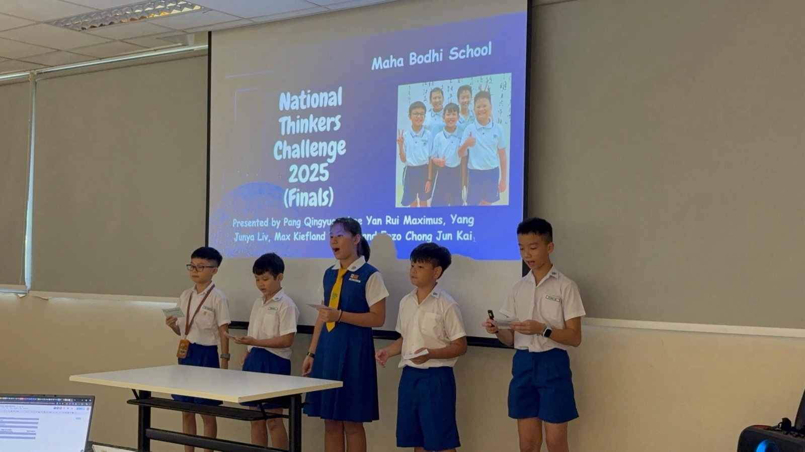
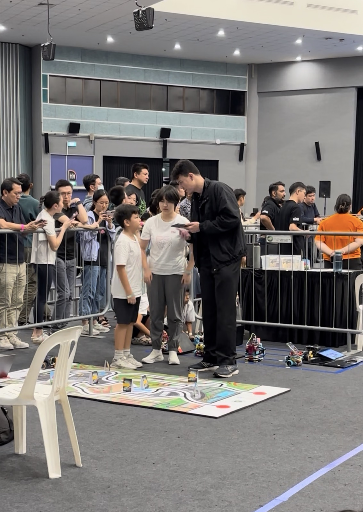
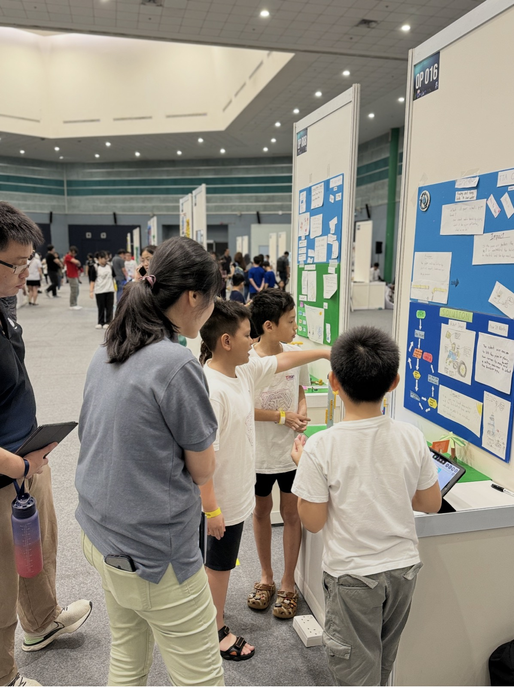
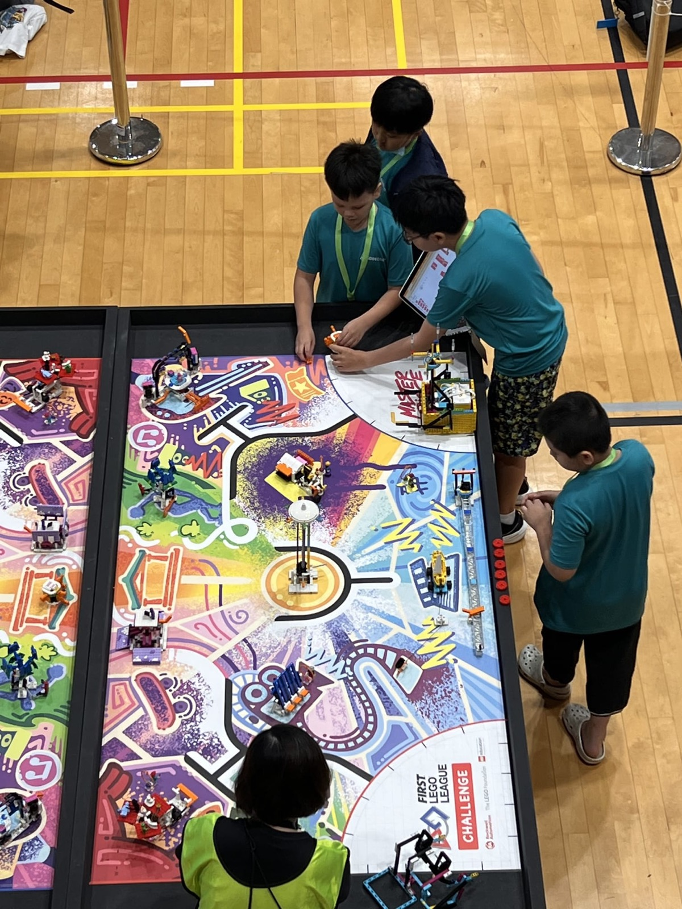

Initiative
Explore beyond the given task.
Prologue • DSA-Sec 2027
“What if I could build it myself?”
My curiosity began in kindergarten, grew through coding, and led me back to robotics.
class Enzo:
curiosity = True
effort = 100
def solve(challenge):
learn()
build()
improve()
return "Keep going!"Chapter 01
The spark
In kindergarten, my mum did not sign me up for robotics enrichment. Watching my classmates made me curious about robots.
Later, I saw my neighbour coding. The code became animations on screen, and technology felt alive. My mum then signed me up for coding classes, but I kept digging deeper until I found robotics again.
At Titan Tech Academy, I built on that interest through Python, UGOT robotics, and projects beyond the curriculum.
“Every error is a clue.”
Explore beyond the given task.
Refocus, test, and execute.
Share ideas and solve together.
Chapter 02
The challenges
Each competition gave me a different problem to solve and a lesson to carry forward.
Competition
Top 8 Finalist attachments + teamwork

A strong solution must be useful, clear, and easy for people to understand.
Competition
Line-following AI robot obstacle + image recognition

Autonomous robots need reliable sensing before smart decisions can happen.
Competition
Pipe support alert robot ultrasonic + arm + siren

Robots are most useful when sensors, action, and communication work together.
Competition
Robot missions LEGO build + code

Good design needs teamwork, testing, and fast iteration.
Chapter 03
The build
Each project matters to me because each one taught me a different way to solve problems.
CAMERA • GESTURE • ROBOT
Computer vision + robotics
I built a MediaPipe project that uses hand gestures to control a robot's movement.
It showed initiative and helped me connect Python, computer vision, and robotics.
Portfolio
Game
Science
Science
Game
Website
Game
Learning app
How I build
Define the problem.
Build a simple version.
Test and improve.
Plan the next step.
Chapter 04
The person behind the code
I enjoy both technical and creative technology: Python, C++, game design, 3D modelling, and 3D printing.
Beyond technology
Patience, detail, and steady practice.
Communication, resilience, and teamwork.
Chapter 05
The next chapter
I hope to deepen my STEM skills and contribute curiosity, creativity, and problem-solving.
Interview approach: example, lesson, contribution.
I want to grow in a programme that values curiosity, creativity, and problem-solving.
I am proud of all my projects. Each one shows a different part of my learning: robotics, coding, games, science, design, and persistence.
I will contribute ideas, stay calm in teams, and keep improving through computing and robotics.